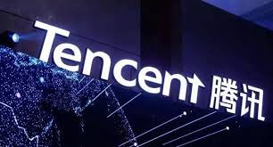
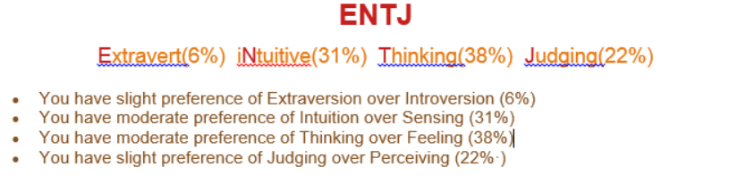
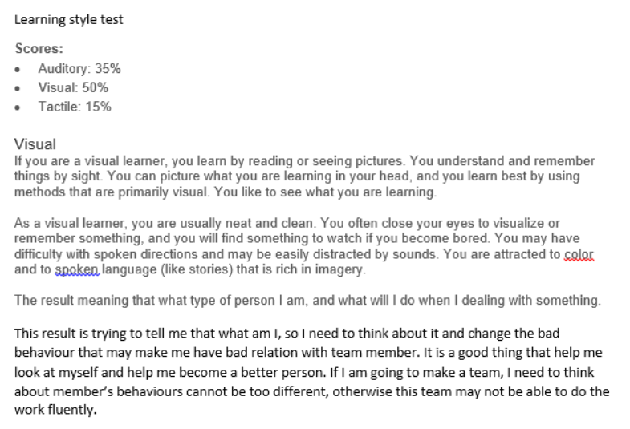
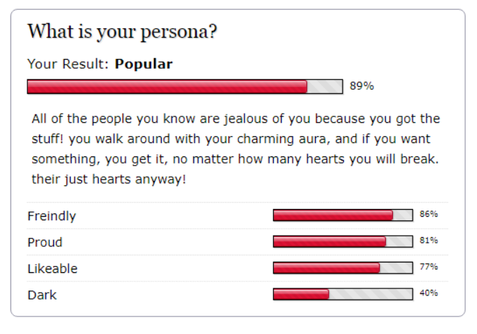
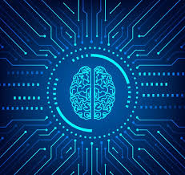

Personal Information
Hi, my name is Haizhou Cheng, you also can call me Eric.
Student number: s3622097
Email Address: 81996862gmail.com
I come from China, Shenzhen which is the first economic zone in China. Because I am Chinese so my first language is Chinese, I am doing undergraduate about Information Technology in RMIT. This is my first time learning knowledge in university and also this is my first time learning something by use English. I am a person with wide range interest, I like sport, I can swim, play basketball, table tennis, billiard and so on. Even though I am not really good at it but still enjoy it. Also I really love card, I play all the things contain card, for example poke card game and poke card trick, magic gathering game, Hearthstone. Next of course is video game. My favourite game is League of legend, second favourite is Blizzard game.
My own image
Interest In IT
About me, IT is a very powerful things. Because I have read a lot of article and book, also watch some video about IT, all of this material are talking about IT equal future. Along with the human being technology improve. IT industry will be more important than before. And also after 5G come out, everything in our life all will connect with each other, that is the reason why I choose IT, because that is the subject which connected with future.
There have 3 different reason cause me choose RMIT. First is because RMIT is locate in Melbourne CBD, this university have almost the best location in Melbourne. The city campus near the Melbourne central train station, so I can come school by use a very easy way. Second reason is because of school facility. As we know, Melbourne University is the best university in Melbourne and maybe is the best in Australian (somebody say is ANU). Of course Melbourne University course rank is higher than RMIT, but you compare school facilities like building and library, I am pretty sure RMIT is better than Melbourne University. (Some Melbourne University student come and study in RMIT library).
During the time I study in RMIT I prefer to learn something which can help me find a good job. Because the knowledge we learn in undergraduate is not enough for the high level research or scientific research. So I plan to learn the useful and basic knowledge in first year study, and then looking for some subject like big data or artificial intelligence which can widen my knowledge and help me decide what should I do in master degree.
Idea Job
My ideal job is data analyst, the reason why I choose this job is because it can use in almost all different area, just like what I am wrote in interest in IT? after 5G come out every company need to deal with plenty of data, data may become the most thing everyone need to facing in everyday, no matter who you are where you live, you all need to look at different type of data and make a correct decision about how to use it. And also this job can help me learning Artificial Intelligence in the future. Because AI is a kind of predict machine, their mainly job is working with different type of data. And predict the correct future which can help human being. However, this job is not very easy to get. If I want to find this job, I need to learn a lot of things in different area. For example the URL I put at bot is a data analyst job advertisement, this job called Graduate AI Engineer? Data Analyst. This job requires a lot of skills and experience, such as strong Python and JavaScript skill, have experience with AI or machine learning and LAMP + Mongo DB blended stack. Also need some experience about AWS knowledge, and they prefer the person who graduated recently. To be honest, I don't really have almost all experience about above requirement skill. The only one I have been touch is the Java Script. If I want to get this job, I need to try my best to learn all the software skill which I wrote above, and also need to find some course about machine learning, big data and AI in year 2 and 3 in RMIT. If it still not enough, then I need to look for a master degree course which contain machine learning or AI skill which can help me improve my knowledge.
Recruitment advertisement
Tell the ture, my favourite company is Tencent. Tencent is the biggest internet company. This company involve plenty different area about internet, for example message application--wechat QQ, video game--Roit, Supercell and so on, QQmail, QQmusic, QQvideo, QQnews...... I have download all of this kind of application on my mobile phone. If i can be one of the stuff in Tencent, I will be very happy. By the way, Tencent is the company which growing up with me. Its office building is very near my home which located in Chian, ShenZhen.

Personal Profile

The results of Myers-Briggs test.

The results of learning style test.

The result of persona test.
This result is trying to tell me that what am I, so I need to think about it and change the bad behaviour that may make me have bad relation with team member. It is a good thing that help me look at myself and help me become a better person. If I am going to make a team, I need to think about member behaviours cannot be too different, otherwise this team may not be able to do the work fluently.
Project Ideas
Overview
The project which I am interest and think it may become the innovation of IT is AI manager. This idea is come from filmography--<"black mirror">. There have one episode is talking about copy people's mind data and use this data to build a self-make AI which know everything about you and can serve you about everything in your life. But the way which use in film is unhuman and also very difficult to achieve. But AI manage not have ethical issues and easy to achieve by using nowadays technology.
Motivation
As we know, nowadays lots of different company use plenty of money on virtual assistance, such as Apple Siri, Microsoft Cortana and Tencent Xiaowei. They all very powerful virtual assistance on your phone or computer. But after 5G or 6, 7 G come out. Network speed will become super fast, at that time data is not something we need to worried about, so I believe everything will be connect with each other. And virtual assistance will not only exist in your phone, it should be exist at everywhere, it should become people's second eyes and second brain. Because is super useful and everyone need it, so AI manager have very big market and also good for me. Because I can learn a lot of thing about it, and also good for the job I trying to have.
Description
This project have very high potential in the market, because it a completely new thing for human being. AI manager technique is basic on 5G ( fast network speed), the extend product of 5G is every stuff around us become more intelligence, they can collect data by themselves, and this kind of data shows the way how we live. But if we not do something with that data, it just a group of number which store in your hardware. Why not do something with it? As we know, AI is a kind of predict machine? it collect data and use it to predict the future. That is why Amazon can easily know what we interest. After 5G come out, not only big company can use our data, we also can use it by ourselves. AI manger can collect the data in our daily life, use it to predict what we need, what we want, because everything connect each other. AI manager can scan our fridge and tell the Coles what we need and Coles will send it to your house, also AI manager can look our calendar and create a precise timetable for us, is good because computer will never forget anything. It can help you check your email box, filter out junk email, only keep the thing you need and sum up into short word. It can consider how long will you cost from workplace to the train station and when is the next train to tell you when should you leave the workplace is the best time, so you don't need to wait at station. Overall, AI manager is like your own assistance which can save a lot of time in a day, so you can use the time to do other things. People can get the information them need in a short time, no one need to turn on the phone or computer and find a single information in so many different application. It waste time and stupid, if you have AI manager just 2 steps, 1 turn on the manager, 2 ask your question. Fast and save. At that time the only thing we need to worried is mobile phone (if we still use mobile phone) battery. Convenient, fast and useful, why not?
Tools and technologies
This is not an easy project, it need to be very powerful, otherwise it cannot make sure it can 100% do the things which user want. And it also need powerful security system and good relation with all company. Software: need to have very good software team which can build a powerful AI system, and also have separate calculate way with every different user. Can build a strong firewall to protect user's personal information. Can work with all application, can understand all different kind of data. Have good way to learn, have ability to understand different kind of people and respect different religion. Hardware: I suppose this AI manager terminal equipment stay in two place. One is locate at our company's computer room. Because we need to collect the data feedback and fix bug. Another is locate at user's house, which is easy to dealing the data from user.
Skill required
Software are AI itself, and how to fix bug, defence attack, update and create new features. Hardware are two terminal in company and user's home. 5G signal transmission device. Phone (screen that can show user some information), headphone (tell user information), power bank (if still need it), SIM card or NFC chip to get data and prove your personal detail (must have SIM or NFC (this is hardware to prove who you are), and user ID and password or fingerprint or face ID). Relationship: we need to work with all different company in the word to help AI learn all different thing. All is the advantage of this software. So first we need to make sure, we are the first company make this project and can have cooperate with all company which their product can produce data.4
Outcome
Change the way people live! The original way people get information is by our 5 sense Olfactory, Hearing, Tactile, Vision and Taste. But now we use everything to become our sensor, everything can send our data, we can get anything we want immediately. We know ourselves healthy easily, fridge can tell us what we ate in this week, and what element our body need, so what should we eat at next week, if we choose yes. Supermarket will send the food to us and AI manager can help you find the cheapest thing and also help you pay the money. That is what AI manager can give us, a better, faster, more comfortable life.
